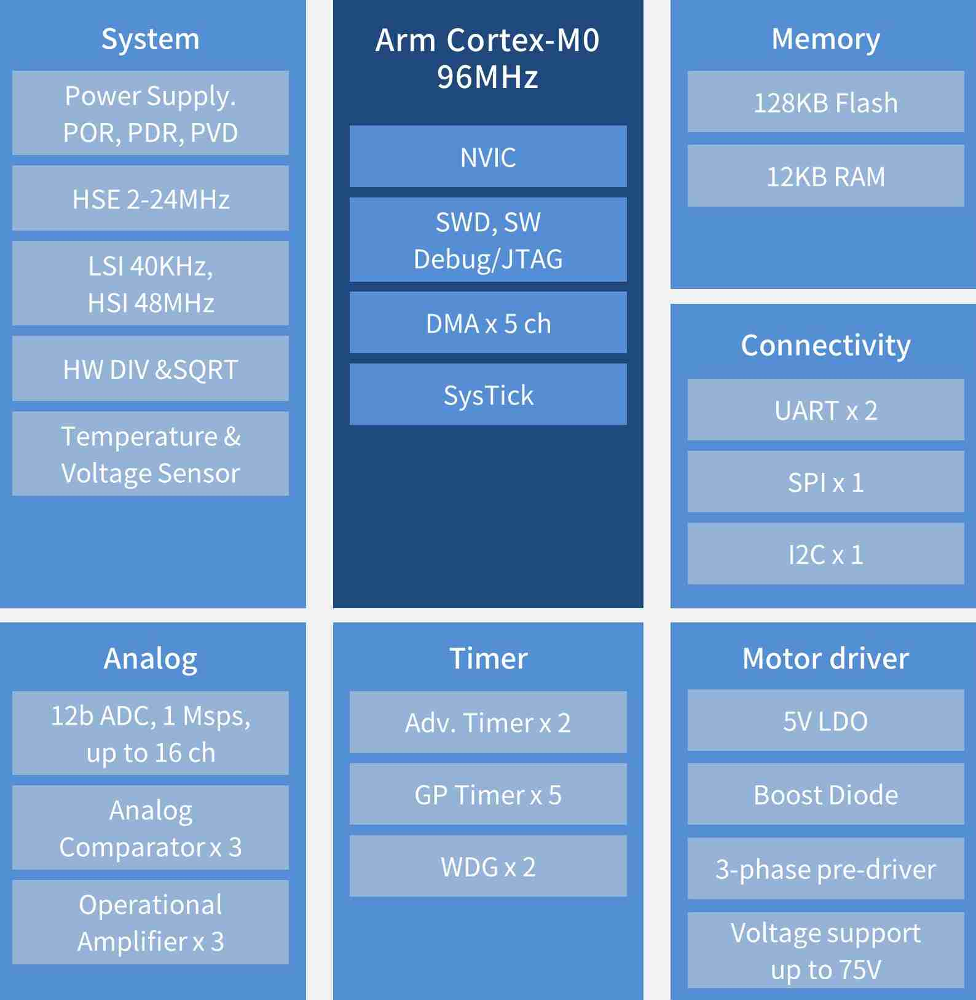

MM32SPIN360C¶
mindmotion : Cortex-M0 96MHz
Xin简介¶
SIP封装 实现单芯片大功率驱动
规格参数¶
基本参数¶
发布时间：
参考价格：￥11
制程工艺：
供货周期：
处理性能：
封装规格：QFN48
运行环境：-40°C to +85°C
RAM容量：12KB
Flash容量：128KB
特征参数¶
96 MHz Cortex-M0
12-bit 1Msps ADC
5 个通用定时器、2 个针对电机控制的 PWM 高级定时器
1 个 I2C 接口、2 个 SPI 接口和 2 个 UART 接口
针对电机应用内置 3 个运放，3 个比较器
预驱工作电压高达 60V
芯片架构¶
Xin选择¶
品牌对比¶
版本对比¶
预驱 MCU 内部集成预驱，最高支持 200V 电压。芯片内部集成 LDO、OPAMP、COMP、高速 ADC、电机专用 PWM 模块
驱动 MCU 针对低压，低功率电机应用专门设计，具有极高的集成度。芯片内部集成 MOSFET、LDO、OPAMP、COMP、高速 ADC、电机专用 PWM 模块
MM32SPIN222C¶
MOSFET
MM32SPIN222C系列 单芯片集成 6 个 MOSFET
72 MHz Cortex-M0
封装规格：QFN32
32KB Flash，4KB SRAM
针对电机应用内置 1 个比较器，集成 6 个 MOSFET ，支持 3V - 16V 供电，最大驱动电流为 1.5A
MM32SPIN560C¶
MM32SPIN560C单片机蕴含2个12位的ADC，采样速度高达3Msps，5个通用定时器、2个针对电机管制的PWM高级定时器，1个I2C接口、2个SPI接口和3个UART接口，针对电机利用内置3个运放，3个比拟器，预驱工作电压高达60V，工作温度范畴（环境温度）-40℃-105℃，提供QFN48封装。